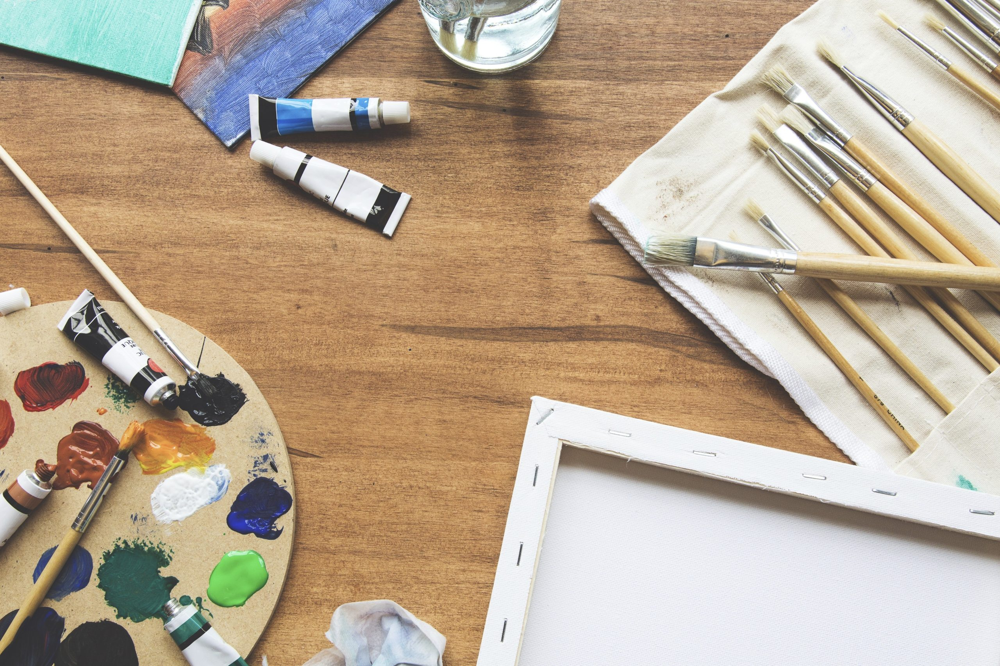

Welcome to Oil Painting Mastery
Learn how to create stunning oil paintings with this step-by-step guide for beginners.
Step-by-Step Guide
- Gather Your Materials: Choose artist-grade paints, brushes, a canvas, palette knives, and mediums like linseed oil or gamsol.
- Prepare Your Workspace: Set up in a ventilated area with good lighting, and lay protective sheets to avoid spills.
- Prime Your Canvas: Apply a thin layer of gesso and let it dry. Sand lightly if desired for a smoother surface.
- Sketch Your Design: Plan your composition with pencil or charcoal, focusing on proportions and placement.
- Apply an Underpainting: Use a thinned neutral color to set tonal values and mood for your painting.
- Block In Main Shapes: Start with larger elements and background layers, then gradually build up the painting.
- Add Details and Texture: Use smaller brushes and palette knives for fine details and depth. Experiment with stippling or scraping techniques.
- Blend and Harmonize Colors: Work wet-on-wet for smooth transitions, blending edges softly for natural effects.
- Final Touches: Add highlights and vibrant accents to complete the painting. Check for balance from a distance.
- Clean and Store: Clean brushes thoroughly, store paints securely, and let the painting dry for at least two weeks before varnishing.
Expanded Tips
- Consistency Matters: Start with thin layers and progress to thicker ones for stable, crack-free painting.
- Mix Thoughtfully: Avoid over-mixing colors on your palette to maintain vibrancy.
- Stay Patient: Allow paint to dry between layers for cleaner results and better blending.
- Safety First: Work in a ventilated area, especially when using solvents or varnishes.
- Experiment: Try different mediums like linseed oil or gamsol to discover unique textures and effects.